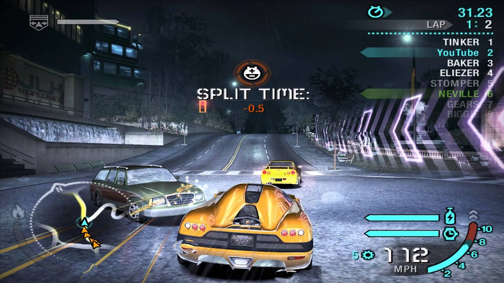
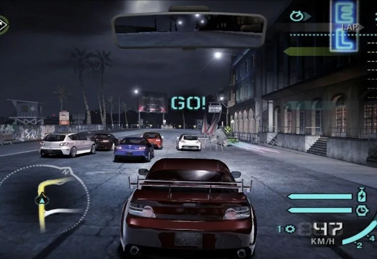

Need For Speed (Carbon)
 
Need for Speed: Carbon es un videojuego de carreras desarrollado por EA
Black Box y publicado por Electronic Arts. Es la décima entrega de la
saga de videojuegos Need for Speed. Fue mostrado por primera vez en la
conferencia de Sony durante el E3 de 2006. Es el primer juego de NFS que
es lanzado para PlayStation 3 y Wii y presenta un énfasis marcado en las
carreras ilegales nocturnas.
La trama de esta secuela trata sobre lo que ocurrió meses después de los
hechos ocurridos durante Need for Speed: Most Wanted. El personaje y
protagonista llamado Brian regresa a su ciudad natal, Palmont City,
dándose cuenta de que todo ahí ha cambiado. Ahora, los equipos se pelean
por el control de las calles para dominar toda la ciudad. El duelo final
se disputa en el Cañón Carbon (de ahí el nombre del juego) y puede
convertirse en una carrera mortal.